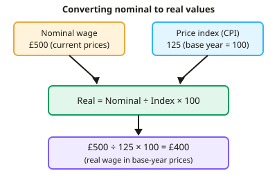

A-level Economics Year 12 · Topic 11
Quantitative skills in economics
This topic practises the maths skills you need for economics exams.
We will cover percentages, index numbers and real values, elasticities, and solving linear demand and supply equations.
Then we work through graphs and areas, cost and profit calculations, macroeconomic calculations, and interpreting data.
- 7 subtopics
- 268 questions
- Free: 11.1 notes and 10 questions
In this topic
- 11.1Percentages, index numbers and real versus nominal valuesFree below · 42 questions
- 11.2Calculating and interpreting elasticities (PED, YED, XED, PES)Open in Full Marks · 11 questions
- 11.3Linear demand and supply equations, equilibrium and shiftsOpen in Full Marks · 26 questions
- 11.4Reading and drawing graphs: gradients, areas, surplus and tax incidence calculationsOpen in Full Marks · 63 questions
- 11.5Cost, revenue and profit calculationsOpen in Full Marks · 21 questions
- 11.6Macro calculations: growth rates, inflation, multiplier and weighted averagesOpen in Full Marks · 42 questions
- 11.7Interpreting data: tables, time series, Lorenz curves and Gini coefficientsOpen in Full Marks · 63 questions
11.1 · Free notes
Percentages, index numbers and real versus nominal values

Key points
- Percentage change = (new value − old value) ÷ old value × 100. Always divide by the original value, and show your working.
- A percentage point change is the simple difference between two percentages. Unemployment rising from 4% to 5% is a 1 percentage point rise but a 25% rise. Examiners penalise confusing the two.
- An index number = (value in year ÷ value in base year) × 100. The base year is always 100, and index numbers have no units.
- To find the percentage change between two years, use (index₂ − index₁) ÷ index₁ × 100. The difference in index points is only a percentage change if the starting index is 100.
- Index numbers show changes over time, not absolute levels. If A = 140 and B = 120 (same base year), A's price has risen faster, but A is not necessarily dearer than B.
- Nominal values are measured at current prices and include the effect of inflation. Real values are adjusted for inflation and measured at constant (base-year) prices.
- Real value = nominal value ÷ price index × 100. For example, nominal GDP of £2,400bn with a GDP deflator of 120 gives real GDP of £2,000bn.
- Approximate rules: real growth ≈ nominal growth − inflation, real interest rate ≈ nominal rate − inflation and real wage change ≈ nominal wage change − inflation. The exact version is (1 + nominal) ÷ (1 + inflation) − 1.
- Inflation is the percentage change in a price index such as the CPI, which is a weighted average of a basket of goods and services. Falling inflation (disinflation) means prices are still rising, only more slowly.
- A weighted average multiplies each item's change by its weight and then sums. For example, 20% × 5% + 30% × 2% + 50% × 1% = 2.1%.
- Use real values to compare living standards, output or wages over time. Using nominal figures overstates growth in periods of inflation.
- Exam tip: state units (£, %, index points), check whether the question asks for a percentage or a percentage point, and give the answer to the requested decimal places.
In more detail
- Percentage vs points: an interest rate rising from 4% to 5% is a rise of 1 percentage point, but a 25% increase.
- Worked real wage: weekly pay rises from £500 to £540 while the price index rises from 100 to 106 → real wage = 540 ÷ 106 × 100 = £509.43, a real rise of about 1.9%.
- Worked rebasing: to make a new base year, divide each index by that year's value and multiply by 100, so 120 becomes 100 and 132 becomes 110.
- Exam tip: an index moving from 120 to 132 is a 12 point rise but a 10% rise.
Practice
Percentages, index numbers and real versus nominal values: 10 questions
Pick an answer to check it, or open the answer for the explanation.
1. A good's price rises from £40 to £46. What is the percentage change in price?
- 6%
- 18.4%
- 13%
- 15%
Show answer
D: 15%. Percentage change = (46 − 40) ÷ 40 × 100 = 15%. Dividing by the new price (13%) is a common error; always divide by the original value.
2. Unemployment rises from 4% to 5%. Which statement is correct?
- A 5 percentage point rise, which is a 25% increase
- A 1 percentage point rise, which is a 25% increase
- A 1% rise, which is a 1 percentage point increase
- A 20% rise, which is a 1 percentage point increase
Show answer
B: A 1 percentage point rise, which is a 25% increase. The simple difference is 1 percentage point. The percentage change is 1 ÷ 4 × 100 = 25%, so the two measures differ.
3. A price index (2018 = 100) is 120 in 2023 and 126 in 2024. What is the percentage change in prices between 2023 and 2024?
- 6%
- 4.8%
- 26%
- 5%
Show answer
D: 5%. Percentage change = (126 − 120) ÷ 120 × 100 = 5%. The 6-point rise is not 6% because the starting index is 120, not 100.
4. A worker earns a nominal £30,000 when the CPI is 120 (base year = 100). What is the real income in base-year prices?
- £29,880
- £25,000
- £36,000
- £30,000
Show answer
B: £25,000. Real = nominal ÷ index × 100 = 30,000 ÷ 120 × 100 = £25,000. Multiplying by the index would wrongly give £36,000.
5. Nominal GDP grows by 5% in a year when the general price level rises by 3%. Approximately, real GDP growth is:
- 2%
- 1.67%
- 3%
- 8%
Show answer
A: 2%. Real growth ≈ nominal growth − inflation = 5% − 3% = 2% (exactly 1.05 ÷ 1.03 − 1 ≈ 1.9%). Adding the figures is a common error.
6. UK inflation falls from 4% to 2%. Which statement is correct?
- Real incomes must have risen
- Nominal GDP must have fallen
- The price level is falling
- The price level is still rising, but more slowly
Show answer
D: The price level is still rising, but more slowly. Inflation of 2% still means prices are rising. A fall in the rate is disinflation, which is different from deflation (falling prices).
7. A worker's nominal pay rises by 2% while consumer prices rise by 4%. Her real pay has:
- fallen by about 2%
- stayed the same
- risen by about 6%
- risen by about 2%
Show answer
A: fallen by about 2%. Real pay change ≈ 2% − 4% = −2%. Her pay rose in money terms, but it buys less than before.
8. A house price index rises from 80 to 100 (the base year). What is the percentage increase in house prices?
- 20%
- 125%
- 80%
- 25%
Show answer
D: 25%. Percentage change = (100 − 80) ÷ 80 × 100 = 25%. The 20-point rise is not 20% because the starting index is 80.
9. Nominal GDP is £2,400bn and the GDP deflator is 120 (base year = 100). Real GDP in base-year prices is:
- £2,000bn
- £2,880bn
- £2,280bn
- £2,400bn
Show answer
A: £2,000bn. Real GDP = 2,400 ÷ 120 × 100 = £2,000bn. Dividing by the deflator strips out price rises; multiplying would give £2,880bn.
10. Food (weight 20%) has inflation of 5%, housing (30%) 2% and other items (50%) 1%. What is the weighted average inflation rate?
- 2.7%
- 8.0%
- 2.0%
- 2.1%
Show answer
D: 2.1%. Weighted inflation = 0.2 × 5 + 0.3 × 2 + 0.5 × 1 = 1.0 + 0.6 + 0.5 = 2.1%. The simple average (2.7%) ignores the weights.
Keep going in Full Marks
Full Marks has 42 questions on Percentages, index numbers and real versus nominal values (32 more than here), set out in practice levels. You also get notes and 3D models for all 7 subtopics of Quantitative skills in economics, plus games, timed exams and past papers.
On your exam board
Not in the Cambridge specification.